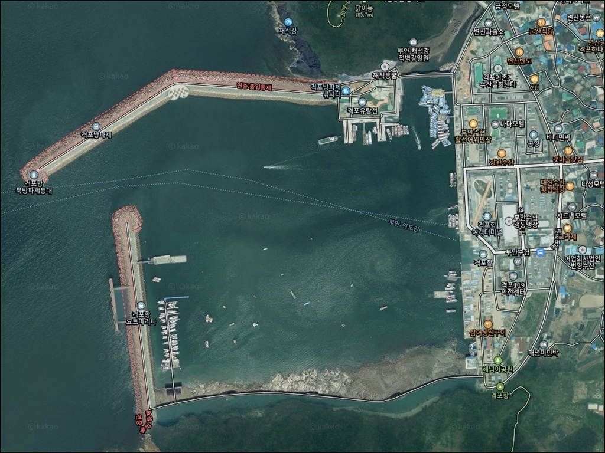
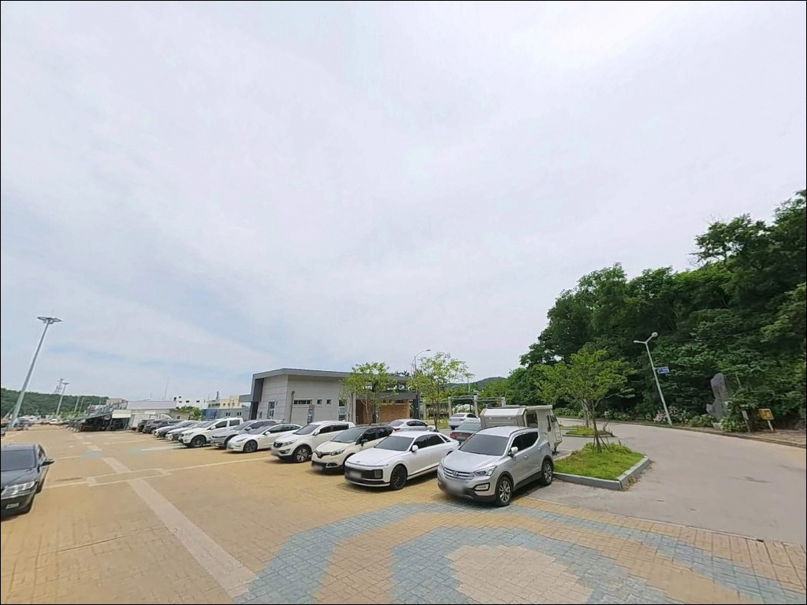
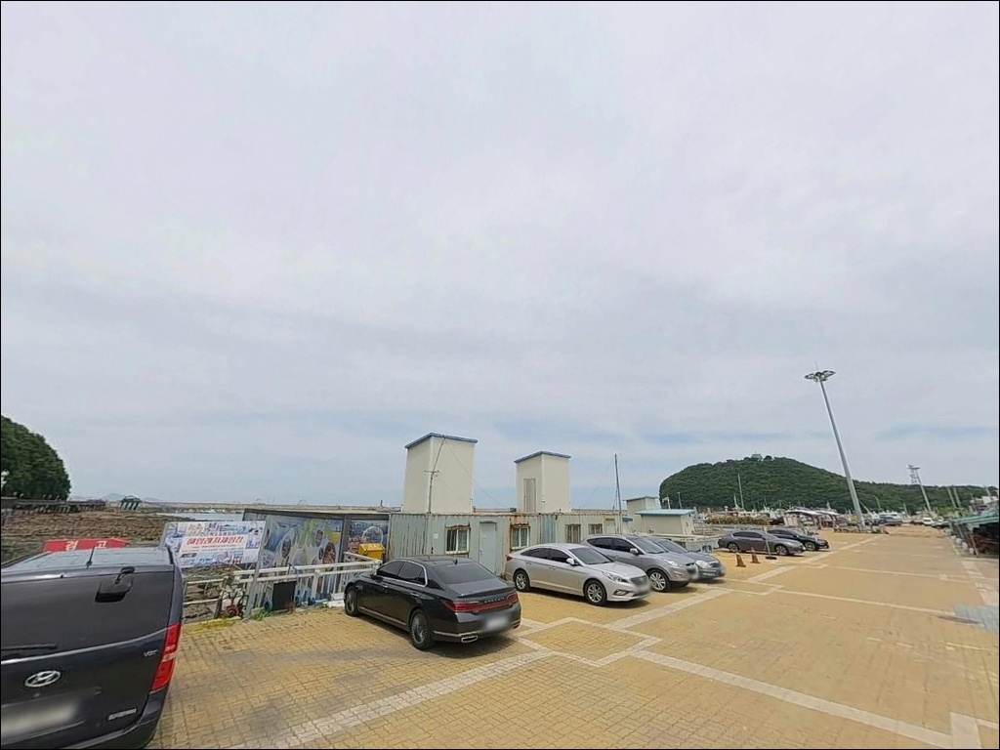
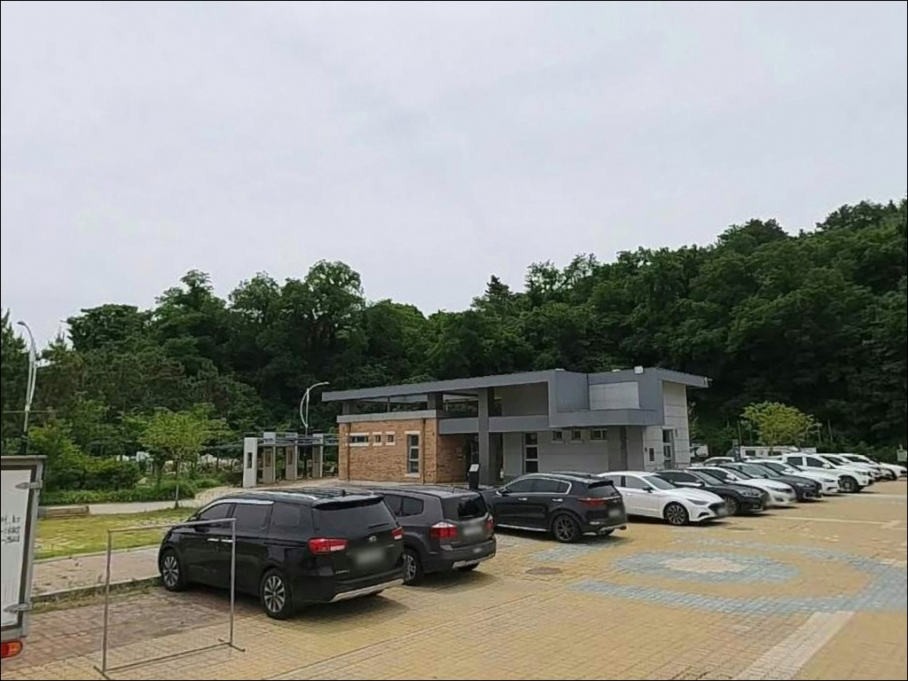
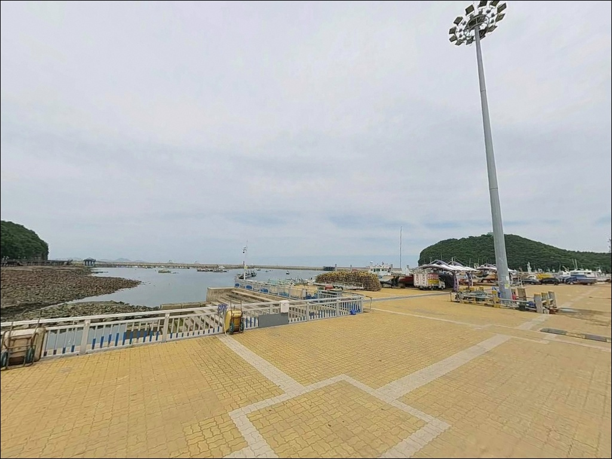
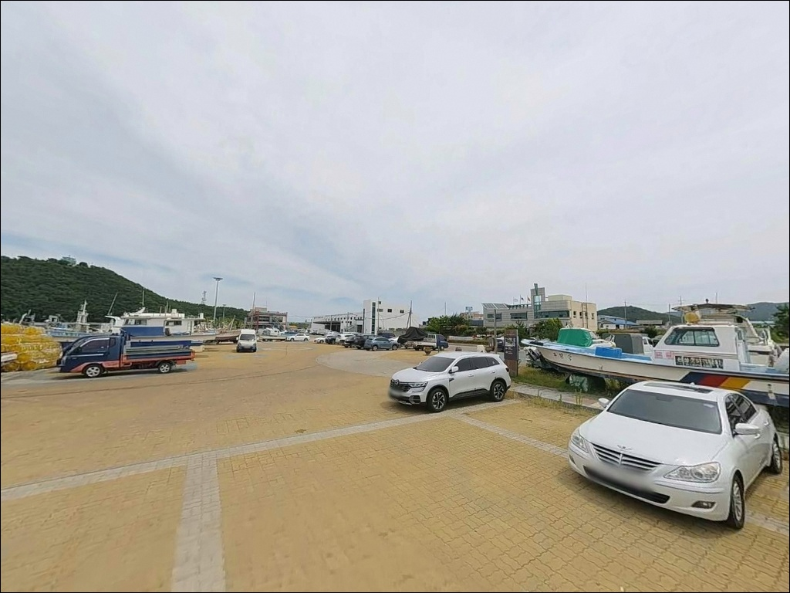
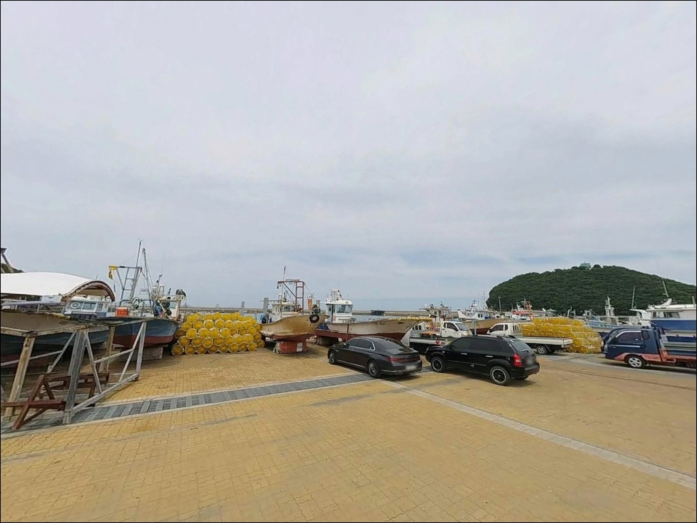
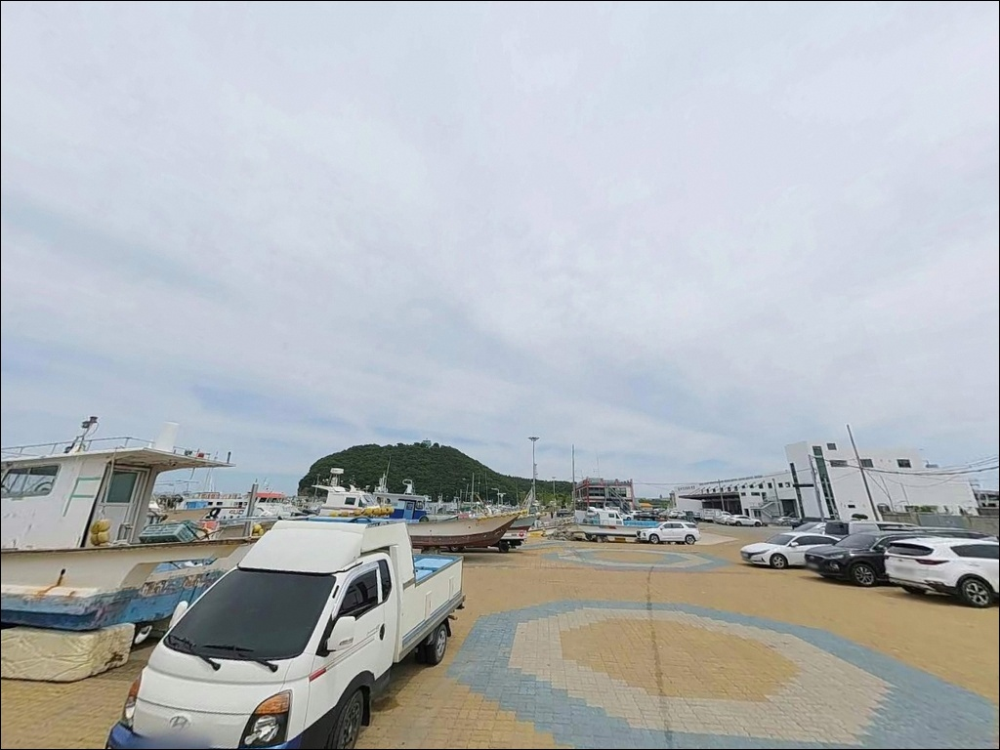
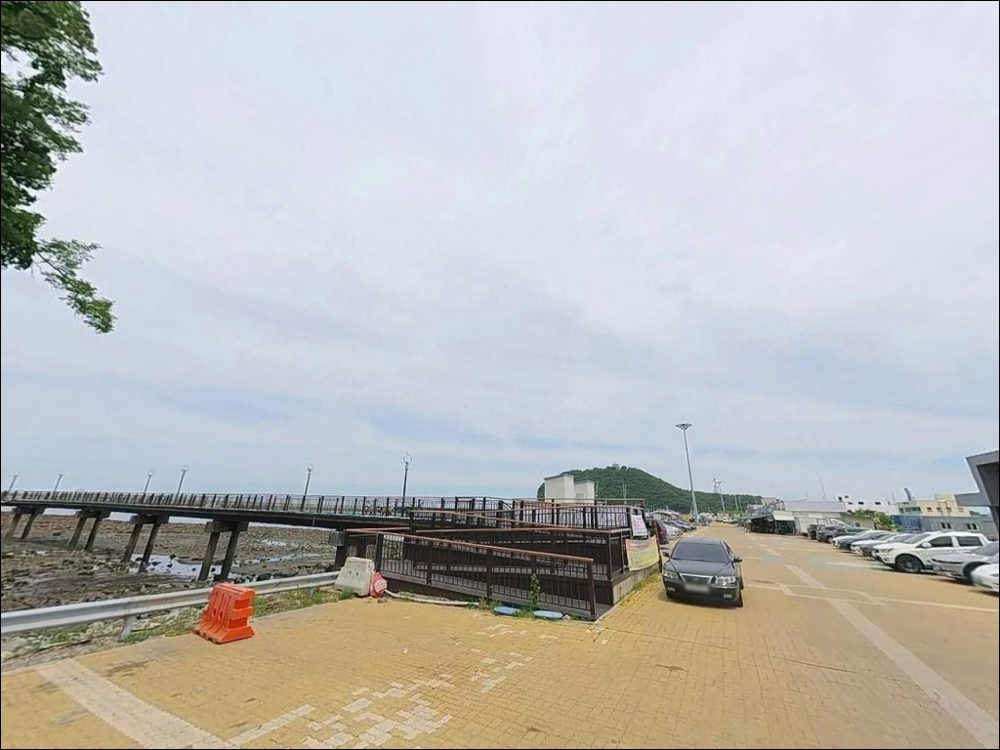

이 페이지에는 광고(제휴 링크 포함)가 있으며, 광고 링크를 통해 구매하면 운영자가 판매 수익 또는 수수료를 받을 수 있습니다. 포인트 사진: 카카오맵 스카이뷰·로드뷰. 이 페이지의 지도·사진 이미지는 카카오맵의 실제 서비스 이미지와 다를 수 있습니다.

격포항
전북 부안군 변산면 격포리 788-13
격포항 남방파제는
간조 시에만 진입이 가능한 구조입니다.
만조 시각에 맞춰 도착하면
남방파제 진입로가 물에 잠겨 있어
포인트 선택 폭이 북방파제 하나로 좁혀지는
상황을 맞게 됩니다.
1986년 국가어항으로 지정된 격포항은
북방파제 610m, 남방파제 380m로 구성된
서해안 대표 방파제 낚시 포인트입니다.
위도·왕등도 출조 여객선이 오가는
거점항이기도 해, 선상낚시 동선과
방파제 도보낚시를 함께 계획할 수 있는 구조입니다.
이 글은
격포항 북·남 방파제의 진입 조건과
낚시 여건, 차박 체류 가능성을
중심으로 정리합니다.
조황 단정과 특정 어종 보장은
이 글의 범위에 포함되지 않습니다.

격포항은 국가어항 지정 이후 격포항길·격포로 등
포장 도로로 항구 내부까지 진입하는 구조입니다.
도로 폭은 대형 버스와 화물차가 오가는 수준이라
대형 SUV나 캠핑 차량도
진입 단계에서 특별한 제약은 없습니다.
주차는 격포항 공영주차장을 기준으로
검토하는 편이 안정적입니다.
북방파제 입구 인근 노상 주차 구역과
남방파제 인근 공간도 후보가 됩니다.
관광 성수기에는 채석강 방문객과
주차 공간이 겹칠 수 있어
이른 시각 진입이 유리합니다.
남방파제(380m)는
간조 시에만 진입이 가능한 구간입니다.
진입 전 조석 확인이 먼저이고,
진입 후에도 밀물 진행 속도를 감안해
철수 시각을 미리 잡아두는 것이
현장 운용의 기본입니다.

격포항 일대는 변산반도국립공원 구역에 포함됩니다.
국립공원 구역 내에서는
지정 장소 외 야영·취사가
원칙적으로 금지됩니다.
항 내부를 차박 거점으로 삼기 전에
해당 구역의 야영 허용 여부를
먼저 확인하는 것이 우선입니다.
격포항은 국가어항이자
위도행 여객선 터미널 기능을 갖춘
복합 구조의 항구입니다.
관광지·상업시설·민가가 밀집한 환경이라
야간에도 조명과 유동인구가 있는 편입니다.
프라이버시 측면에서는
한산한 소항과 비교했을 때 불리한 조건입니다.
차박을 주목적으로 방문한다면
격포항 내부보다
인근 모항 방면을 먼저 탐색하는 편이
현실적인 대안입니다.
낚시와 차박을 분리해
격포항에서 낚시를 마친 뒤 이동하는 동선이
격포를 효율적으로 활용하는 방식입니다.

격포항 수산시장(격포중앙길 28-4)이
항 인근에 자리하고 있으며,
격포어촌계 회센터와 식당가가
함께 형성되어 있습니다.
낚시 후 현장에서 해산물을 구입하거나
식사를 해결하기에 좋은 환경입니다.
단, 항 인근에 편의점이 가까이 없다는
방문 경험이 다수입니다.
식수와 간식, 낚시 소품, 연료는
출발 전에 미리 조달해 두는 편이 안전합니다.
응급 상황에 대비해
격포119안전센터와
부안해양경찰서 변산파출소가
항 주변에 있다는 점은
안전 환경 측면에서 긍정적입니다.

격포항 방문 전 가장 먼저 확인할 것은 물때입니다.
서해 특성상 조차가 크고,
물때에 따라 남방파제 진입 가능 여부와
낚시 여건이 크게 달라집니다.
바다타임에서 격포 기준 조석표를 확인하고,
남방파제 진입이 목표라면
간조 타이밍을 중심으로
입장 시각을 잡아야 합니다.
이 일대의 주풍향은 북서 계열이고
평균 풍속이 4.0m/s 수준입니다.
기상 악화 시 외항 방파제 끝단은
파도와 바람의 영향을 직접 받습니다.
기상청 해상예보를
출발 당일 아침 다시 확인하는 것이
현장 판단 실패를 막는 조건입니다.
테트라포드 구간에서는 낙상 위험이 높습니다.
구명조끼 착용과 미끄럼 방지 신발은
격포항 방파제 낚시에서
선택이 아닌 기본 준비입니다.
야간 낚시라면 헤드랜턴도 필수입니다.

격포항은 항내 수심 4.5m로 안정적이며,
외항 쪽으로 갈수록 수심이 깊어지는 구조입니다.
북방파제(610m)는 약 200m 지점에서
꺾임 구간이 형성되며, 이 꺾임을 기준으로
끝단 외항권, 꺾임 지점 내항권,
석축 구간의 포인트 성격이 달라집니다.
꺾임 지점 내항 쪽은
날물 때 숭어 떼가 모이는 구간으로 알려져 있으며,
들물 시각에는 전방 20m 이상
릴찌낚시 자리로 활용됩니다.
북방파제 끝단 외항 쪽은
조류 흐름을 직접 받는 구간으로
원투와 릴찌낚시 자리로 적합합니다.
외항 방파제 끝단은
북서풍 주풍향의 영향을 직접 받는 구간으로,
파고 예보 확인이 자리 선정의 기준이 됩니다.
남방파제 주변에는 수중 여(礁)가 발달한
바닥 구조가 형성되어 있습니다.
간조 시 진입 후 끝단 좌우측이
인기 포인트로 알려져 있으며,
물밑 여 주변은 바닥 어종과
갑오징어 계열이 자리 잡기 좋은 조건입니다.
격포항 공식 어종으로는
꽃게, 광어, 주꾸미, 갑오징어가 등록되어 있으며,
방파제 도보낚시에서는 우럭, 숭어,
노래미, 감성돔이 기대해 볼 수 있는
어종으로 알려져 있습니다.
출조 전 최신 조황은
"격포항 조황", "격포항 방파제 낚시"로
검색해 보시기 바랍니다.
남방파제는 간조 시에만 진입 가능한 구조로,
물때 확인이 포인트 진입 여부를 결정합니다.

릴찌낚시는 격포항 방파제 구조와 수심에
가장 범용적으로 맞는 방식입니다.
숭어와 감성돔을 주 대상으로,
북방파제 꺾임 지점 전방 구간이
효과적인 자리입니다.
들물과 날물에 따라 조류 방향이 달라지므로
조류 방향에 맞춰 캐스팅 방향을 조정하는 것이
조과에 영향을 줍니다.
원투낚시는 내항·외항 모두 구사 가능합니다.
물양장 방향 외항으로 채비를 멀리 보내면
붕장어, 돌가자미 계열을 기대할 수 있는
수심 구간이 형성됩니다.
정조 직전과 직후
조류가 느려지는 타이밍에
바닥 탐색을 집중하는 방식이 어울립니다.
에깅은 주꾸미와 갑오징어 시즌에
적합한 방식입니다.
공식 어종에 주꾸미와 갑오징어가
등록된 포인트인 만큼,
시즌이 맞는다면
방파제 외항 라인과 남방파제 끝단 주변
여밭 구간을 중심으로 에기를 운용해 볼 수 있습니다.
소형 루어와 테트라포드 구멍치기 방식은
우럭과 노래미를 노리는 데 적합합니다.
북방파제 석축과 테트라포드 경계 구간이
주요 탐색 자리입니다.

격포항 여건이 맞지 않을 때
첫 번째 대안은 궁항 방파제입니다.
차량으로 10분 이내 거리에 있는
소규모 방파제로,
격포항 대비 조용한 낚시 환경을 갖춘
포인트로 알려져 있습니다.
격포항은 위도행 여객선이
하루 6회 운항하는 거점항입니다.
위도는 청정해역으로 낚시인들에게
오랫동안 알려진 섬으로,
당일 출조를 계획한다면
선상·원도 낚시로 연계할 수 있는
동선이 됩니다.
왕등도(상·하왕등도) 방면 여객선 노선도
격포항에서 연결됩니다.
차박 대안은 격포항보다
모항 방면을 먼저 검토하는 편이 현실적입니다.
변산반도 해안선을 따라 이동하면
모항 방면에 상대적으로
한적한 주차 환경이 있습니다.
다만 이 구간도 변산반도국립공원
인접 지역임을 감안해야 합니다.

릴찌낚시부터 원투낚시, 에깅, 소형 루어까지
방식을 가리지 않는 올라운드형 방파제 구조가
격포항의 강점입니다.
북방파제 꺾임 지점과 끝단,
남방파제 여밭 주변까지
포인트 선택 폭이 넓어
방파제 낚시를 즐기는 낚시인이라면
하루를 충분히 활용할 수 있는 규모입니다.
물때를 모르고 오면 남방파제 진입이 막히고,
주풍향 북서 계열 특성상
외항 자리는 기상 예보에 따라
운용 방식이 달라집니다.
격포항에서 제대로 된 낚시를 하려면
물때 확인, 기상 예보 점검, 사전 식수·소품 조달,
이 세 가지가 출발 전에 갖춰져야 합니다.
변산반도국립공원 구역 내라는 점을 고려해
차박보다 낚시에 집중하는 방문으로 계획하고,
식사는 격포항 수산시장과 식당가를 활용하면
충실한 출조가 됩니다.
낚시를 마친 뒤 모항 방면으로 이동해
하룻밤 머무는 동선이라면,
격포항 방파제 낚시와 차박을
자연스럽게 묶어서 즐길 수 있습니다.